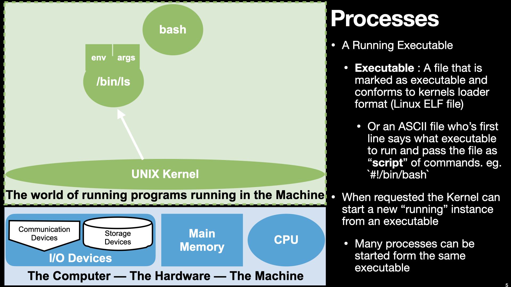
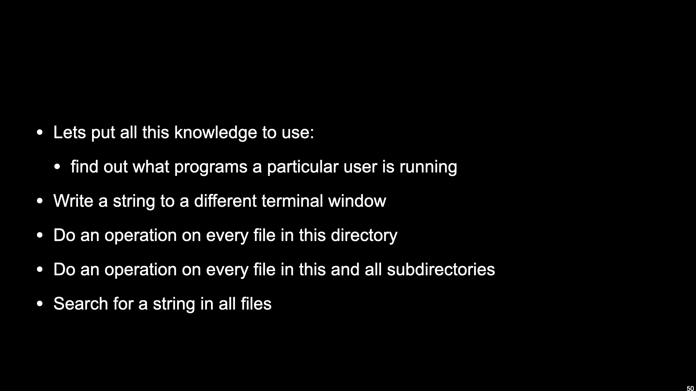

UNIX Process, I/O and Credentials
Contents
3. UNIX Process, I/O and Credentials#


3.1. Processes, Files and Streams#
3.1.1. What is a process in more detail and what can it do#
a running program
process can launch another processes
bash is implemented to start commands as process (when needed)
passes command line arguments and environment variables
{kind=link}



{kind=link}

3.1.2. Processes, Files and channel/stream model of I/O#
3.1.2.1. Files and Kernel objects#
read, write
everything is a file


3.1.3. Streams: Processes and Files#
open : attach a file as a stream
file descriptors/handles : stream
read and write bytes to a stream
close
dup
standard input, standard output, standard error


3.1.4. Shell Syntax:#
echo 'Hello world' > hellocat hello`cat < ./hello


3.1.5. We now can understand what a pipe is#
pipe file object
Process 1 stdout into pipe and Process 2 stdin from pipe
3.1.6. Shell Syntax:#
‘ls -1 | wc -l’
‘ls -1 | grep ‘^l*’ | wc -l’
mknod mypipe pandmkfifo mypipe


3.2. Process management#
ps- look at all processesThe shell and its children
&: foreground and backgroundctrl-zjobs
so we know how to start process, list them how about stopping
killsignals
ctrl-c
or without prejudice


3.3. Credentials and file permissions#
Process have id’s associated with them
a single user id :
ida single number that maps to a string user name (
/etc/passwd)
set of group ids
user has a primary group but can be in many secondary groups
each has a number that maps to a name (
/etc/group)each group can have many users
ps auxgwwprocess’s inherit their ids from their parent


Files have id’s and permissions
ls -l,chmod,chown, andchgrpuser, group, other -> read, write, execute
kernel ensures that process id’s and requested operations match permissions



{kind=link}